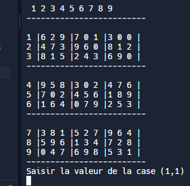

Lors de ma première année de BUT informatique, j’ai travaillé sur la réalisation du célèbre jeu sudoku, ou l’on jouait une partie contre un ordinateur, sur la console, ou la grille était représentée par une matrice.
Ce projet m'a permis découvrir le monde du développement informatique, ce que cela fait de travailler en équipe, l'organisation nécessaire, la répartition des tâches ainsi que beaucoup de choses comme l'apprentissage du langage de programmation java, car ce fût la première fois que je codais véritablement avec un langage de programmation. J'ai aussi appris à chercher et à résoudre certains problèmes techniques lié au code. Etant donné que ce travail était en groupe de 2, j'ai appris également à travailler en équipe, à communiquer au sein du groupe, ainsi que de répartir équitablement le travail pour être plus efficace.
(interface du jeu)
